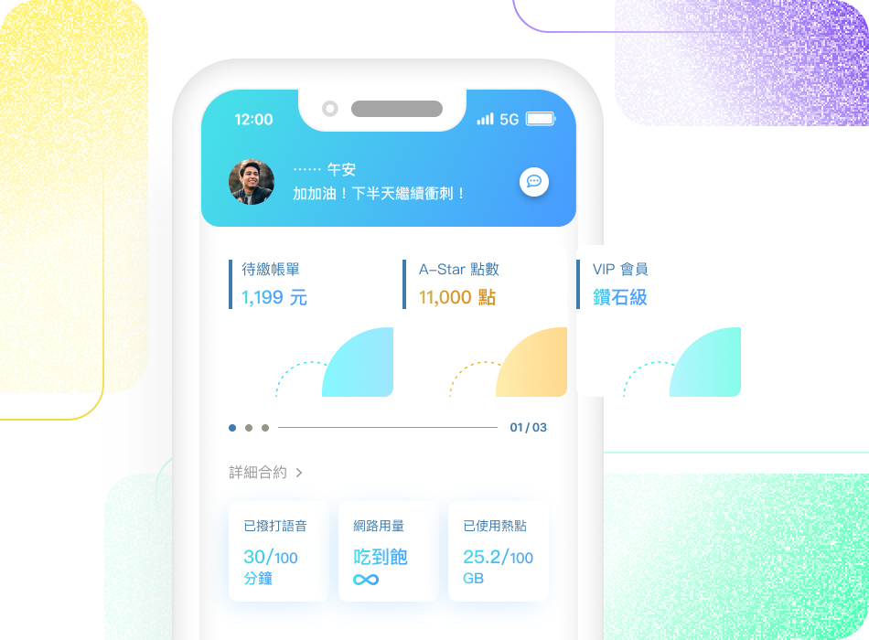
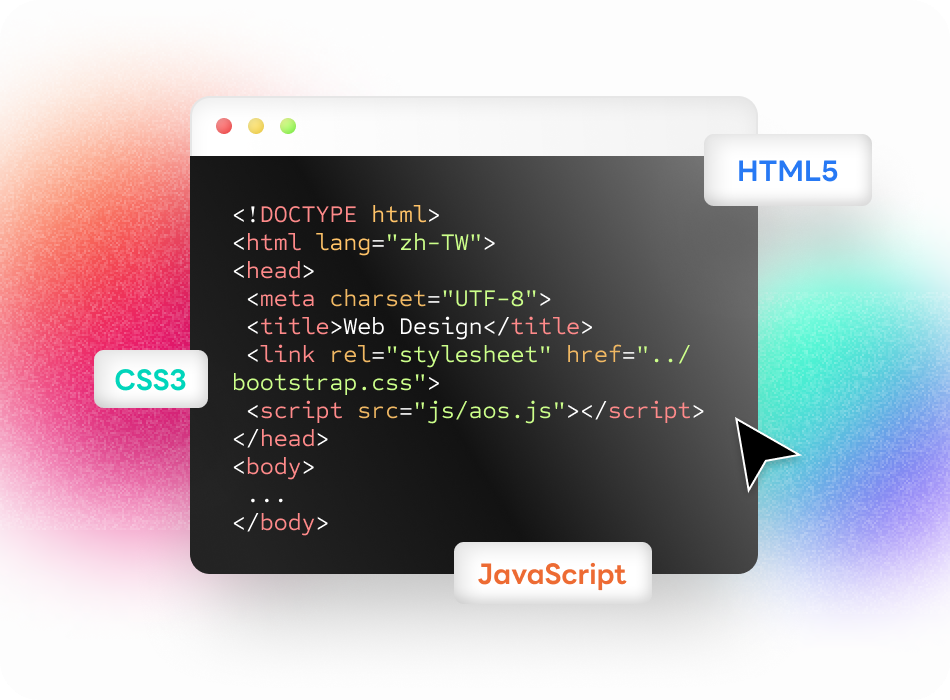

先前於聊天機器人 SaSS 平台與募資電商平台擔任 UI/UX 設計師，主要以使用者經驗、網頁設計規劃和互動視覺設計領域為核心，於數位產品領域深耕已有 2 年以上的工作經驗，期望透過帶有同理心的使用者設計思維與敏捷開發經驗，讓設計的影響力深植於團隊與用戶心中。
As a UI/UX designer with 2+ years, worked at Chatbot SaaS operating platform & Crowdfunding e-Commerce platform based in Taiwan previously. I'm enthusiastic about various type of design works and focus on user experience, interaction and visual design. Hope to improve the digital product better and bring Agile development through the impact of user-centered design .
Expertise｜專長
-
介面與體驗設計
User Interface & Experience Design
 前期以各項 UX 方法描繪出 User Journey Map 企圖挖掘用戶使用上的痛點，利用 Figma / Sketch / Framer 設計介面與 Wireframe，製作原型 Prototyping 與團隊溝通或討論流程降低溝通門檻、增進開發速度。
-
前端網頁設計
Web Design
 使用 HTML 與 CSS 手刻設計網頁，運用 jQuery 和 JavaScript 製作互動原型。時間允許會偏好自己手刻而盡量不去套用現有的框架作設計，也能使用 Grid 和 Bootstrap 系統。
-
圖像視覺設計
Visual Design
有完整的視覺圖像設計經驗，精通各項視覺設計與宣傳行銷視覺、插畫，精通、熱愛攝影，擁有活動攝影相關的經驗。